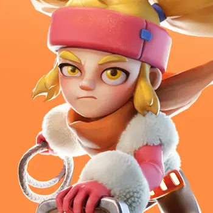
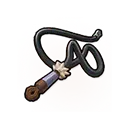

Звериный рывок
Урон по площади + отбрасывание + оглушениеМедведь Натальи бьёт по земле, отбрасывает врагов в радиусе действия и оглушает их на 1 секунду.
Уровни 1–5: 160% / 176% / 192% / 208% / 224% от атаки.

Наталья — мифический пехотный герой первого поколения. Она хорошо держит переднюю линию, контролирует врагов в Освоении и особенно полезна в рейдах на зверей благодаря отдельному бонусу урона.
Максимальные базовые показатели Натальи.
Работают в Освоении и на Арене.
Медведь Натальи бьёт по земле, отбрасывает врагов в радиусе действия и оглушает их на 1 секунду.
Уровни 1–5: 160% / 176% / 192% / 208% / 224% от атаки.
Наталья атакует цель кнутом и наносит высокий разовый урон.
Уровни 1–5: 150% / 165% / 180% / 195% / 210% от атаки.
При получении урона Наталья имеет 10% шанс повысить атаку на 3 секунды. Эффект складывается до 5 раз.
Уровни 1–5: +4% / +6% / +8% / +10% / +12% за заряд.
Работают в PvP, походах, рейдах и боях с войсками.
Даёт 40% шанс снизить получаемый всеми войсками урон.
Уровни 1–5: −10% / −20% / −30% / −40% / −50% получаемого урона.
Повышает атаку всех войск без дополнительного условия.
Уровни 1–5: +5% / +10% / +15% / +20% / +25%.
Увеличивает наносимый всеми войсками урон во время рейдов на зверей.
Уровни 1–5: +5% / +10% / +15% / +20% / +25%.
Пассивный талант Натальи усиливает весь аккаунт даже тогда, когда она не находится в марше.

Эксклюзивное снаряжение Натальи усиливает её личный урон и рейды, которыми она руководит.
1Звериный рывок — главный урон по площади и контроль.
2Кнут — сильный дополнительный урон.
3Ответ ярости — полезен в затяжных боях, но зависит от шанса.
1Дикая защита — сильнейший защитный эффект.
2Королева дикой природы — стабильные +25% атаки всех войск.
3Зов дикой природы — обязательно развивать, если Наталья ведёт рейды на Свирепого медведя.
Одна из главных ниш Натальи. «Зов дикой природы» повышает урон по зверям, а эксклюзивное снаряжение усиливает смертоносность войск рейда.
Сильна в ранней игре как передний герой: отбрасывание и оглушение помогают ломать построение соперника.
Хороший танк первой линии с контролем и большим запасом здоровья.
Уверенно работает в первом поколении. Позже новые пехотные герои дают заметно более высокие характеристики.
Да, если вы уже тратите на игру и регулярно ведёте рейды. Наталья даёт хороший результат в первом поколении, усиливает весь аккаунт талантом и долго остаётся полезной на Свирепом медведе. Но специально вкладываться в неё как в долгосрочного PvP-героя не стоит: новые поколения пехоты постепенно вытесняют её из основного состава.
Изображения взяты отдельными игровыми файлами. Механика и рекомендации сверены по нескольким источникам, включая базы с обновлениями 2026 года.